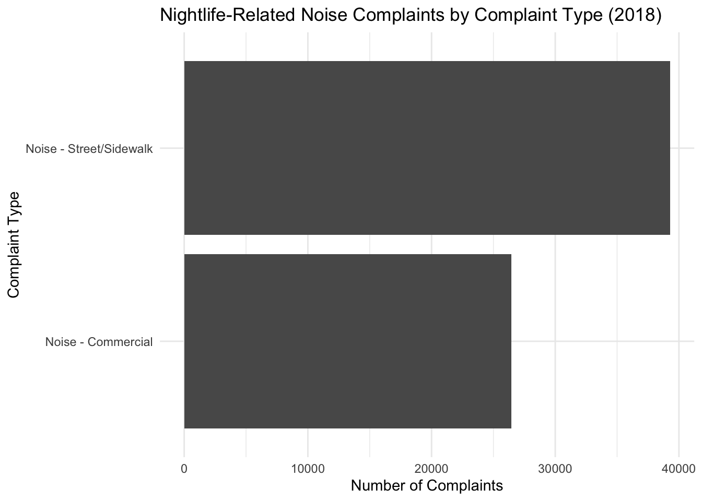
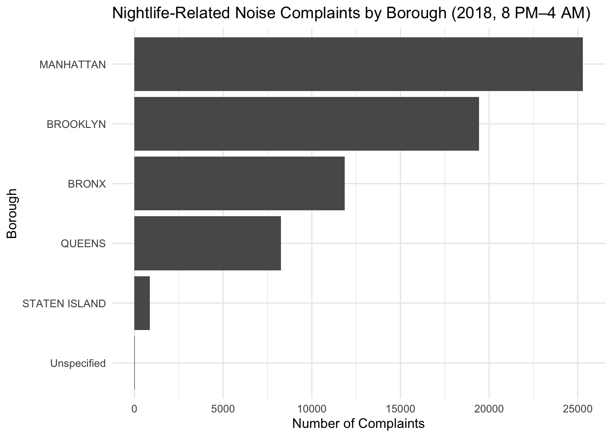
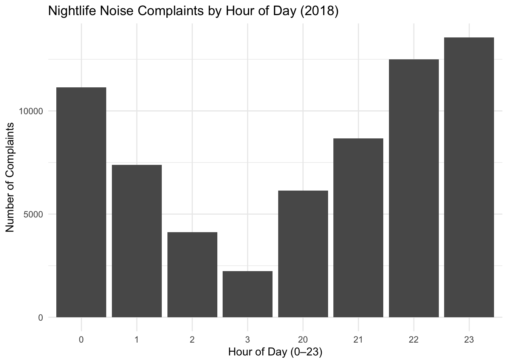
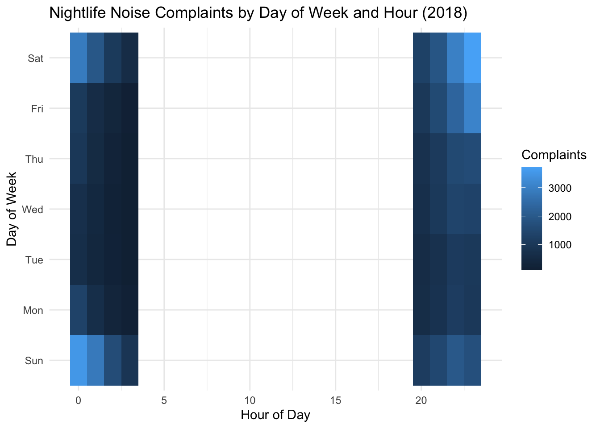
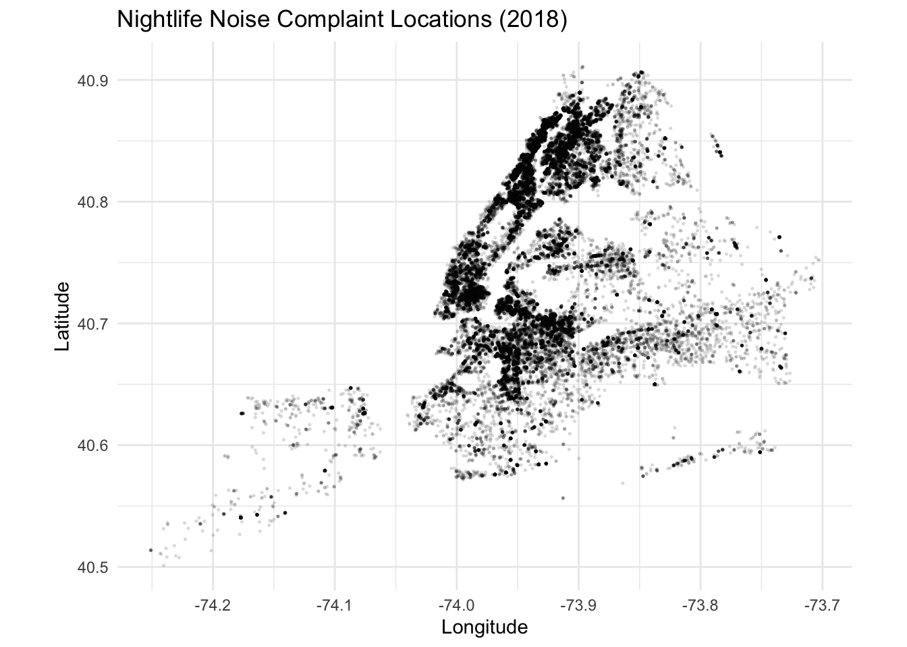
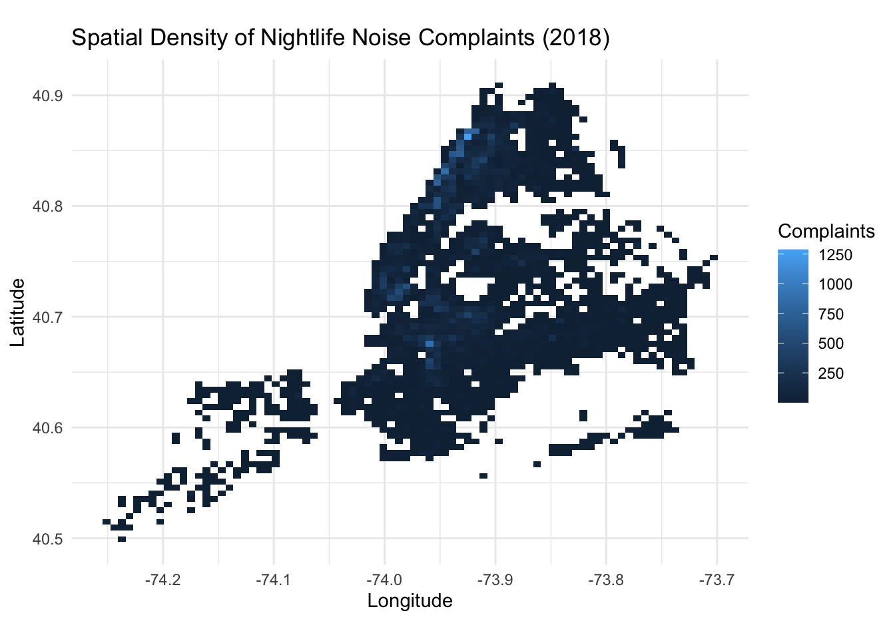

Code
library(dplyr)
library(lubridate)
library(ggplot2)
library(forcats)
library(sf)Nightlife Analyst
New York City’s nightlife is one of its biggest draws — and one of its biggest sources of tension with residents. In this project, we use 311 service request data to explore nightlife-related noise complaints and how they might reveal nightlife hotspots across the city.
For this first local render, we focus on calendar year 2018 and a narrow subset of 311 records that are most likely to reflect nightlife:
Complaint types: Noise - Commercial and Noise - Street/Sidewalk
Descriptor: Loud Music/Party
Time window: Nighttime hours only, 8 PM–4 AM
These choices don’t give us a perfect map of “nightlife,” but they move us closer to noise patterns tied to bars, clubs, restaurants, and late-night street gatherings.
Rows: 65,730
Columns: 11
$ created_date <dttm> 2018-01-01 00:39:44, 2018-01-01 00:14:50, 2018-01-01 0…
$ complaint_type <chr> "Noise - Commercial", "Noise - Street/Sidewalk", "Noise…
$ descriptor <chr> "Loud Music/Party", "Loud Music/Party", "Loud Music/Par…
$ location_type <chr> "Club/Bar/Restaurant", "Street/Sidewalk", "Club/Bar/Res…
$ borough <chr> "BROOKLYN", "MANHATTAN", "MANHATTAN", "MANHATTAN", "MAN…
$ incident_zip <chr> "11249", "10026", "10018", "10027", "10026", "10460", "…
$ latitude <dbl> 40.71423, 40.80125, 40.75625, 40.80991, 40.80597, 40.83…
$ longitude <dbl> -73.96699, -73.95187, -73.99423, -73.95714, -73.95303, …
$ unique_key <chr> "38069522", "38065451", "38067035", "38072788", "380679…
$ hour <int> 0, 0, 2, 23, 1, 1, 2, 1, 0, 0, 1, 0, 0, 1, 1, 0, 0, 1, …
$ dow <ord> Mon, Mon, Mon, Mon, Mon, Mon, Mon, Mon, Mon, Mon, Mon, …In total, we have r scales::comma(total_rows) (65,730) nightlife-related complaints in 2018. This massive volume represents an average of 180 noise complaints every single day in NYC, demonstrating that late-night noise is a chronic, large-scale quality-of-life conflict. This contribution seeks to map this conflict, not just count it.
Filters used
In total, we have r scales::comma(total_rows) nightlife-related complaints in 2018 that:
Fall within the date range 2018-01-01 to 2018-12-31
Have complaint type Noise - Commercial or Noise - Street/Sidewalk
Use the descriptor Loud Music/Party
Occur between 20:00–23:59 or 00:00–03:59
Include valid latitude/longitude for mapping
Limitations / reality check:
Some yelling, cars, or general late-night activity may not be tied to nightlife venues.
Not all nightlife disturbances become 311 complaints — some are never reported.
Reporting behavior varies by neighborhood, building type, and residents’ comfort with calling 311.
So we treat 311 as a signal of nightlife-related conflict, not a perfect census of nightlife.
Calculate the percentages from the bar chart data (approx. 39k and 26k, total 65,730).
We see a decisive split in the nature of the conflict. Noise - Street/Sidewalk is the dominant complaint, accounting for approximately 60% of all nightlife noise issues. This suggests that the primary regulatory challenge is not focused on internal venue management (Commercial Noise, ~40%), but rather on managing crowd dispersal, street congestion, and public space issues outside of licensed premises. This distinction is critical for assigning policy responsibility (e.g., street patrols vs. liquor authority inspections).
p_type <- noise_2018 %>%
count(complaint_type, sort = TRUE) %>%
mutate(complaint_type = fct_reorder(complaint_type, n)) %>%
ggplot(aes(x = complaint_type, y = n)) +
geom_col() +
coord_flip() +
labs(
title = "Nightlife-Related Noise Complaints by Complaint Type (2018)",
x = "Complaint Type",
y = "Number of Complaints"
) +
theme_minimal()
p_type
We see a split between commercial noise and street/sidewalk noise, which we can interpret roughly as indoor venue noise spilling out versus outdoor gatherings and street-level activity.
This view highlights where late-night “Loud Music/Party” complaints are most concentrated. Manhattan leads clearly with 25,288 complaints , followed by Brooklyn with 19,438. While these counts are expected given the density of nightlife in these boroughs, the data also provides a powerful lens on local conditions. For instance, The Bronx’s 11,855 complaints likely represent a far higher conflict rate per square mile compared to Queens (8,267 complaints), implying that noise issues in the Bronx may be more acute or less tolerated by residents in those specific hotspot areas.
p_borough <- noise_2018 %>%
count(borough, sort = TRUE) %>%
mutate(borough = fct_reorder(borough, n)) %>%
ggplot(aes(x = borough, y = n)) +
geom_col() +
coord_flip() +
labs(
title = "Nightlife-Related Noise Complaints by Borough (2018, 8 PM–4 AM)",
x = "Borough",
y = "Number of Complaints"
) +
theme_minimal()
p_borough
borough n
1 MANHATTAN 25288
2 BROOKLYN 19438
3 BRONX 11855
4 QUEENS 8267
5 STATEN ISLAND 877
6 Unspecified 5This view highlights where late-night “Loud Music/Party” complaints are most concentrated — for example, Manhattan and Brooklyn in absolute counts, with smaller but still noticeable volumes in the Bronx and Queens.
Even though we filtered to nightlife hours, the distribution within that window is informative.
The distribution of complaints within our filtered nightlife window (8 PM–4 AM) is highly informative of the conflict timeline. The statistical summary confirms that the median complaint hour is 21:00 (9 PM), but the highest volumes are clearly concentrated in the later hours. As shown in the plot, complaints spike dramatically in the hours of 22:00 (10 PM), 23:00 (11 PM), and peak around 00:00 (midnight). This time window is critical because it falls immediately after most regulatory noise restrictions typically begin, pinpointing the hours of highest conflict and potential regulatory failure.

One can narrate this as: do we see concentrations around midnight–2 AM, or are there substantial complaints earlier in the evening?
This heatmap captures the “rhythm of conflict” in NYC. The dark clusters visually confirm that the overwhelming majority of complaints occur during the peak weekend window: Friday night and Saturday night, with density spiking in the early hours of Saturday and Sunday (00:00–03:00). The sheer volume of complaints during these 8 hours (Friday 10 PM to Saturday 4 AM, and Saturday 10 PM to Sunday 4 AM) provides a clear target for weekend enforcement resource allocation compared to the lower, more diffused activity during the week.

This gives a “rhythm of the week” view — for example, whether late-night complaints spike on Fridays and Saturdays compared to weeknights.
For now, we start with a map of point locations and a density-style view. Later, we can overlay official boundaries (census tracts, nightlife zones, liquor license clusters, etc.).
Point map

###Density (hexbin) view

This gives a first pass at hotspots — clusters of late-night complaints that may line up with nightlife corridors (e.g., parts of Manhattan, Brooklyn, and Queens).
Preparing for Spatial Joins & Nightlife Overlays
To connect these complaints to other layers (e.g., liquor licenses, council districts, or custom-defined “nightlife zones”), we convert the data to an sf object.
Simple feature collection with 65730 features and 9 fields
Geometry type: POINT
Dimension: XY
Bounding box: xmin: -74.25099 ymin: 40.5012 xmax: -73.70273 ymax: 40.91097
Geodetic CRS: WGS 84
First 10 features:
created_date complaint_type descriptor
1 2018-01-01 00:39:44 Noise - Commercial Loud Music/Party
2 2018-01-01 00:14:50 Noise - Street/Sidewalk Loud Music/Party
3 2018-01-01 02:04:18 Noise - Commercial Loud Music/Party
4 2018-01-01 23:08:57 Noise - Street/Sidewalk Loud Music/Party
5 2018-01-01 01:31:17 Noise - Commercial Loud Music/Party
6 2018-01-01 01:08:52 Noise - Commercial Loud Music/Party
7 2018-01-01 02:00:29 Noise - Commercial Loud Music/Party
8 2018-01-01 01:39:10 Noise - Street/Sidewalk Loud Music/Party
9 2018-01-01 00:39:19 Noise - Street/Sidewalk Loud Music/Party
10 2018-01-01 00:29:29 Noise - Street/Sidewalk Loud Music/Party
location_type borough incident_zip unique_key hour dow
1 Club/Bar/Restaurant BROOKLYN 11249 38069522 0 Mon
2 Street/Sidewalk MANHATTAN 10026 38065451 0 Mon
3 Club/Bar/Restaurant MANHATTAN 10018 38067035 2 Mon
4 Street/Sidewalk MANHATTAN 10027 38072788 23 Mon
5 Club/Bar/Restaurant MANHATTAN 10026 38067937 1 Mon
6 Club/Bar/Restaurant BRONX 10460 38067028 1 Mon
7 Store/Commercial BRONX 10471 38069459 2 Mon
8 Street/Sidewalk MANHATTAN 10025 38068837 1 Mon
9 Street/Sidewalk STATEN ISLAND 10303 38067091 0 Mon
10 Street/Sidewalk BROOKLYN 11204 38068812 0 Mon
geometry
1 POINT (-73.96699 40.71423)
2 POINT (-73.95187 40.80125)
3 POINT (-73.99423 40.75625)
4 POINT (-73.95714 40.80991)
5 POINT (-73.95303 40.80597)
6 POINT (-73.86713 40.83751)
7 POINT (-73.89909 40.88955)
8 POINT (-73.97116 40.79104)
9 POINT (-74.16526 40.6228)
10 POINT (-73.97649 40.61168)